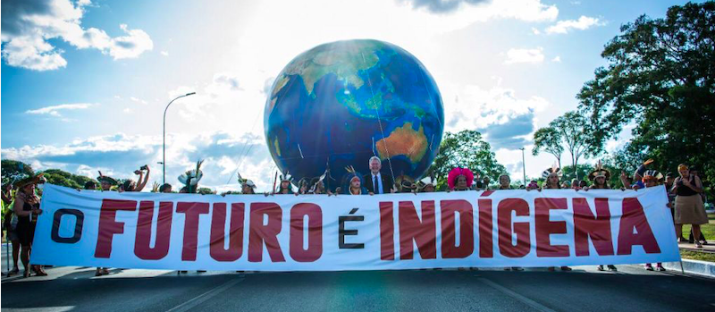
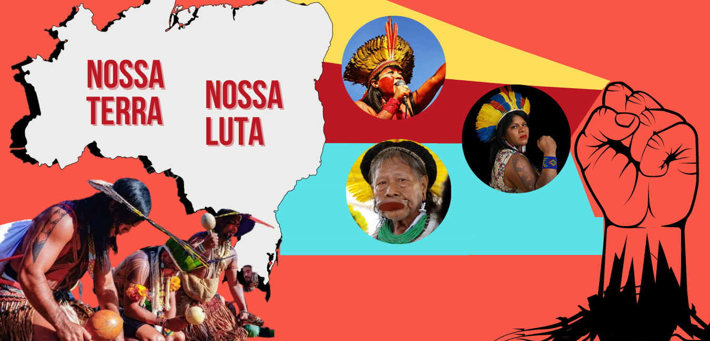

É uma frase comumente usada em movimentos de defesa dos direitos dos povos indígenas no
Brasil. Ela expressa a urgência e a necessidade de acelerar o processo de demarcação das
terras
indígenas, que são reconhecidas como pertencentes aos povos indígenas de acordo com a
Constituição
brasileira de 1988. No entanto, muitas terras indígenas ainda aguardam o processo de
demarcação, enfrentando
ameaças de invasão, exploração ilegal e destruição ambiental. Portanto, "Demarcação já" é um
chamado para que o governo cumpra seu dever constitucional de
demarcar as terras indígenas, garantindo assim a proteção dos direitos e da dignidade.

O futuro é indígena
Reflete a ideia de que os conhecimentos, valores e práticas dos povos indígenas são
essenciais para a construção de um futuro sustentável e harmonioso. Ela sugere que a
preservação das culturas indígenas, seus modos de vida tradicionais e sua relação com o meio
ambiente são fundamentais para enfrentar os desafios globais, como as mudanças climáticas, a
perda de biodiversidade e a busca por uma sociedade mais justa.

Nossa terra, Nossa Luta
É uma frase frequentemente associada aos movimentos de resistência e reivindicação de
direitos territoriais de povos indígenas e comunidades tradicionais. Essa frase reflete a
luta desses grupos pela preservação de suas terras ancestrais, pela proteção do meio
ambiente e pela defesa de seus modos de vida tradicionais. É uma expressão que ressalta a
conexão intrínseca entre a terra e a identidade cultural desses povos, destacando a
importância da luta contínua pela justiça e pelo reconhecimento de seus direitos
territoriais.
Últimas Notícias das Comunidades Indígenas
Explore as ricas culturas e as lutas atuais das nações originárias.

.jpg)